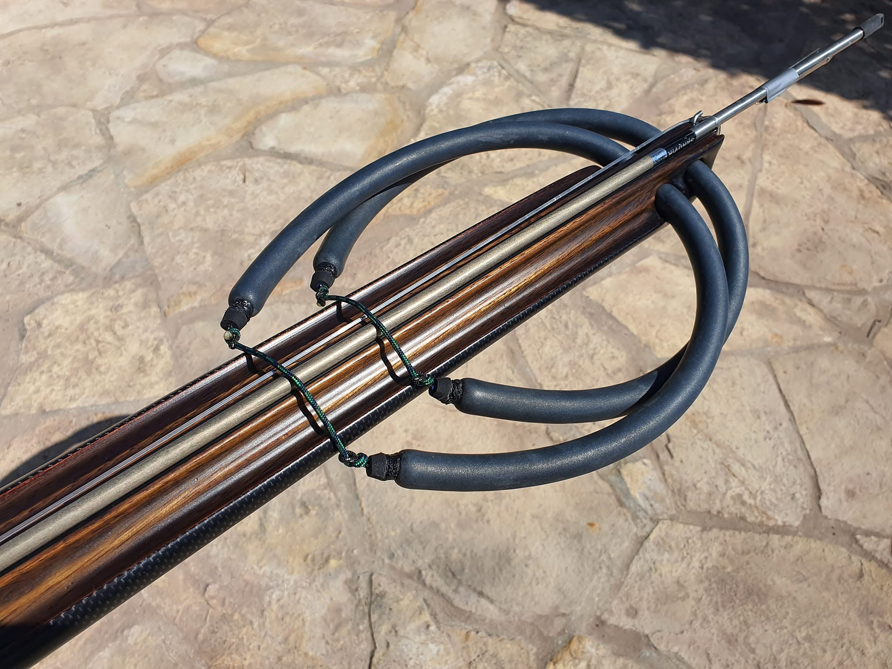
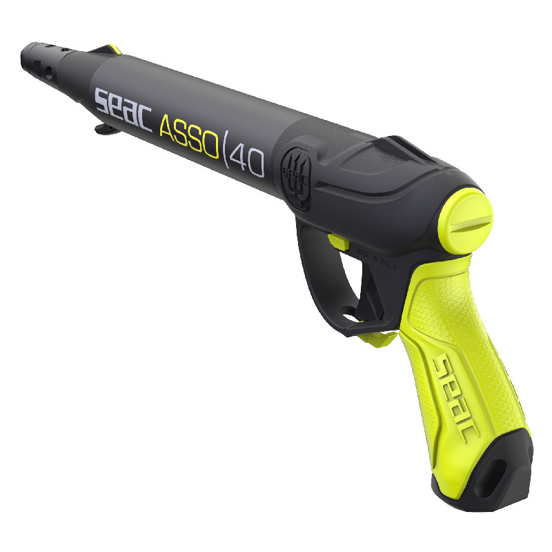
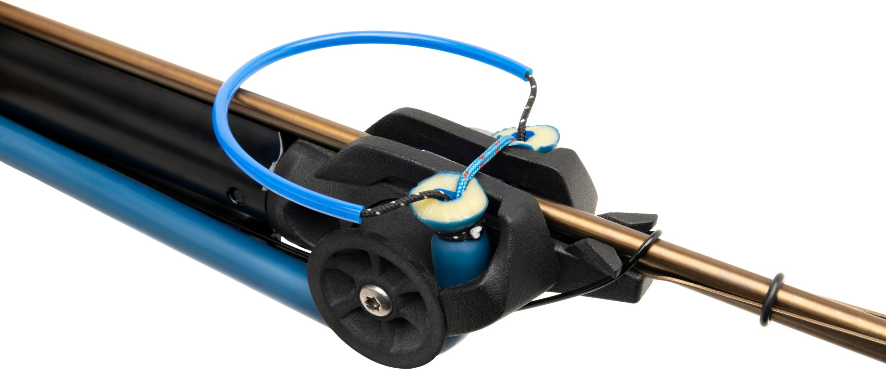
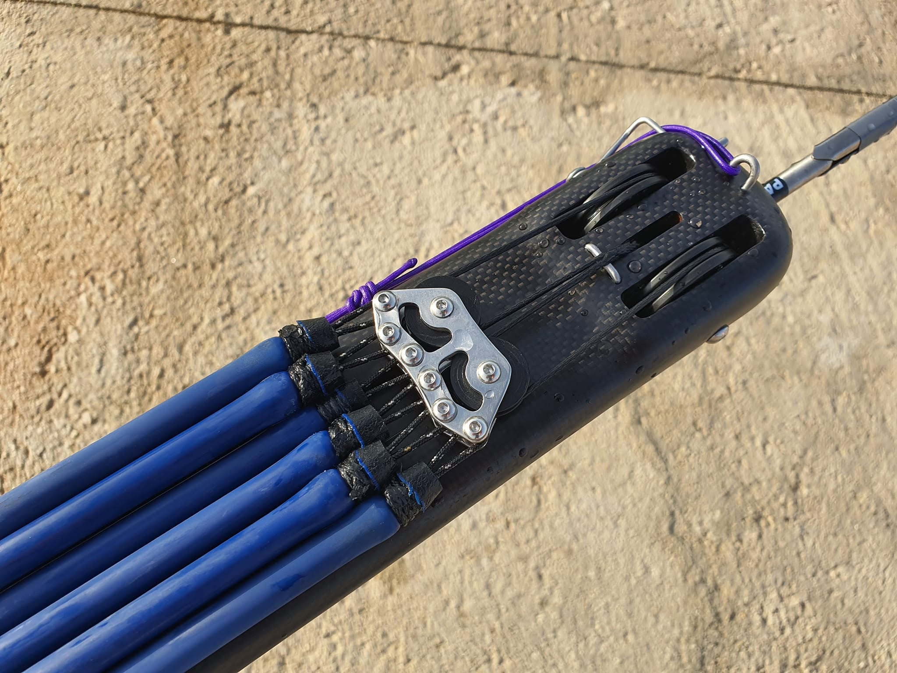

Vrste podvodnih pušaka
Podvodne puške su osnovni alat svakog podvodnog ribolovca. Razlikuju se po načinu pogona, snazi, preciznosti, namjeni i samoj izradi. Mogu biti aluminijske, drvene ili karbonske. Ovdje su opisane najčešće vrste koje se koriste u podvodnom ribolovu.
1. Puške s cirkularnim gumama
Najpopularniji i najčešći tip pušaka. Koriste gume koje se natežu ručno. Jednostavne su, pouzdane i tihe. Najčešće se preporučuju početnicima jer su lagane za korištenje.

- Prednosti: tihe, jednostavne za održavanje, pouzdane
- Nedostaci: zahtijevaju snagu za natezanje
2. Zračne (pneumatske) puške
Koriste komprimirani zrak za ispaljivanje strijele. Kraće su i lakše za rukovanje, posebno u mutnoj vodi.

- Prednosti: kompaktne, snažne, jednostavne za punjenje
- Nedostaci: bučnije, zahtijevaju povremeno servisiranje
3. Roller puške
Naprednija verzija gumenih pušaka. Gume prolaze ispod cijevi, a netežu se preko valjaka u glavi puške, što omogućuje veću snagu i domet uz manji trzaj i lakše natezanje samih guma.

- Prednosti: veći domet, preciznost, manji trzaj, lakše natezanje
- Nedostaci: složenije za izradu i održavanje
4. Invert roller puške
Najmoderniji tip pušaka. Sustav guma je obrnut, što daje iznimnu snagu i stabilnost. Gume se natežu preko pogonskog konopa koji ide preko koloturnika u glavi puške. Koriste ih iskusniji ribolovci.

- Prednosti: iznimna snaga, preciznost, minimalan trzaj, lagano natezanje
- Nedostaci: visoka cijena, složen mehanizam
Odabir prave puške
Početnicima se preporučuju gumene puške dužine 75–90 cm. Napredniji ronioci biraju roller ili invert modele za veći domet i snagu.